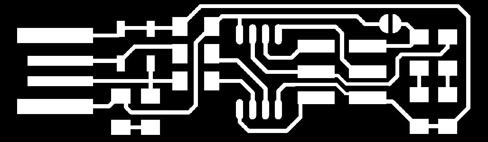
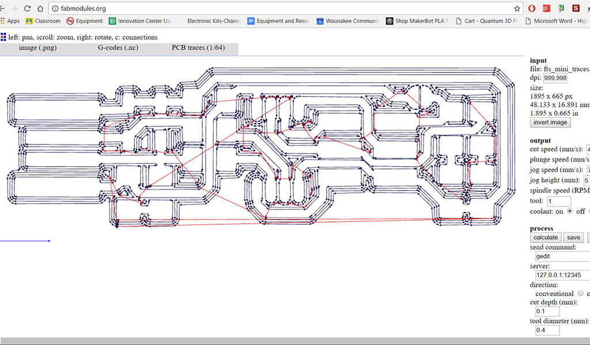
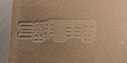
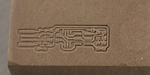
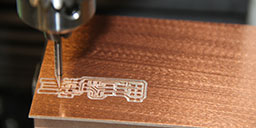
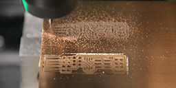
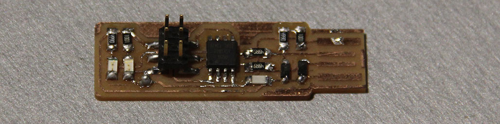
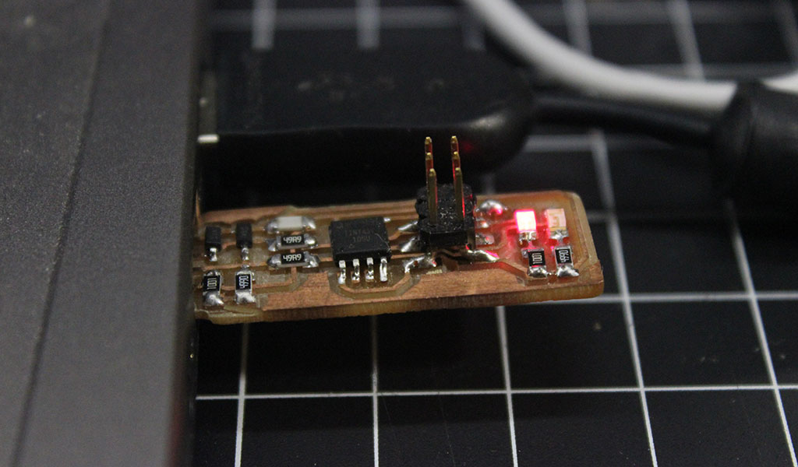
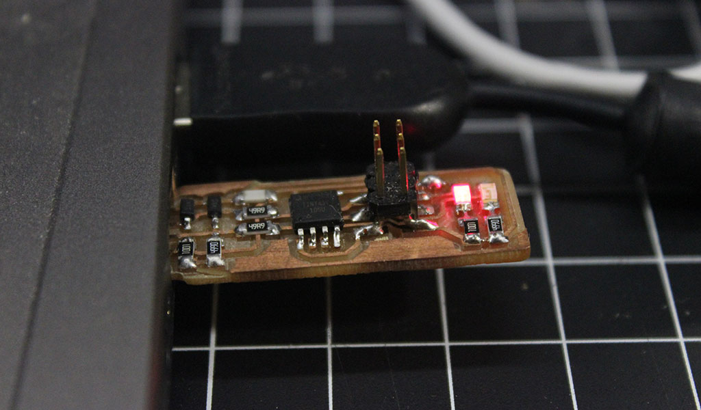

Assignment 4
Electronics production is the topic for week 4. I want to admit that when looking at the class schedule this week's topic was one that caused some initial stress for me. I have little real life experience with electronics and electronics production. We were asked to use one of the Fab modules to CNC a PCB board and then solder the components on to the blank board. Our first step was to order the required materials from a variety of sources. Since we are still ramping up our lab we are purchasing these materials as we go. I found the process of ordering the parts to be quite simple and found all of the materials very easy to source. While I was waiting for the materials to arrive I started to explore the process of getting the files from the original .png to the Tormach 440 pnc mill. Tormach is a local company here in Waunakee and while it is not on the preferred list of machines I find it very capable and easy to use once you have the basics down. The control software is called Path Pilot.
The first step was to download the two images to convert into a .nc file our Tormach pnc 440 uses. We ran the files through the fab module. These files were downloaded off the website shown to us in class.
Traces Outline {kind=link}
{kind=link}
In order to get our CNC files we needed to use the Fab Modules explained in class. these modules take a .png file and export them as a cnc tool path. They are really easy to use. As I mentioned before we had to wait for our end mills, PCB board and other supplies arrived so I decided to play around with the .nc files, various tooling and some donated REN shape material to see just what the mill and .nc files could do. This also gave me some practice with setting up X,Y,Z zero and changing out tooling on the mill. I used the smallest drill bit I could find in our shop to test out the file. you can see below the difference between running the trace image with the small drill bit and the actual 1/64 end mill
 CNC File Once our materials arrived I attached some of the copper plated PCB board into the mill, leveled the plate and set X,Y,Z zero and started to run the traces. These end mills are small! I broke three of them trying to get the settings right on the mill. It seems that 90% of the speed and feed that was originally set for the .nc file worked perfectly. Since the tape was holding the material so well we decided to run Kayla's part next to mine to save time.
Once our traces were milled and our outlines were cut I then moved on to soldering components on to my PCB board. I had ZERO experience with this and quickly realized that slow and steady was the key to success here. One thing I noticed was that some of the components were very hard to identify the correct orientation to place it on the board. I really struggled with the LEDs a I could not see any clear marking for which way they went. After doing some research with Kayla we figured that in the right light under some magnification you can see a green line on one side of the LED letting you know which way to orient the LED on the board. After a successful smoke test we have an LED!!!!!
 

This is StoneWork, a free, fully standards-compliant CSS template designed by TEMPLATED. The photos in this template are from Fotogrph. This free template is released under the Creative Commons Attribution license, so you're pretty much free to do whatever you want with it (even use it commercially) provided you give us credit for it. Have fun :)